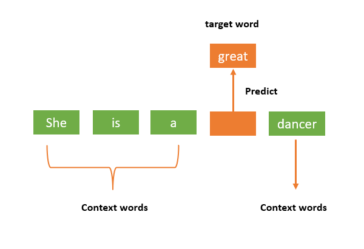
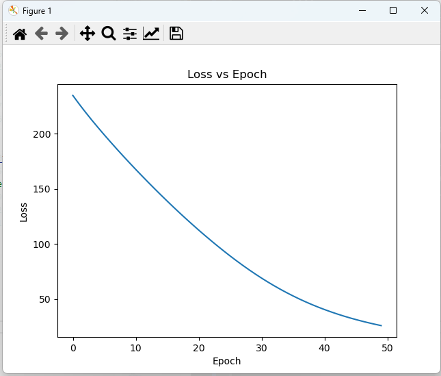

Continuous-bag-of-words¶
约 3292 个字 374 行代码 预计阅读时间 21 分钟
CBOW的更上一层
为了使计算机理解书面文本，我们可以将单词表示为数值向量。一种方法是使用单词嵌入，它们是将单词表示为数值向量的一种方法。这些向量捕获单词的含义及其与语言中其他单词的关系。词嵌入可以使用无监督学习算法（例如 Word2vec、GloVe 或 FastText）生成。
Word2vec 是一种基于神经网络的生成词嵌入的方法，词嵌入是捕获其语义和关系的单词的密集向量表示。实现 Word2vec 有两种主要方法：
- Skip-gram：给定一个单词，预测其上下文单词。
- Continuous Bag of Words (CBOW)：给定上下文单词，预测目标单词。
算法介绍¶
CBOW模型（Continuous Bag-of-Words）是自然语言处理中深度学习领域经常使用的模型之一。它的作用是在给定目标词前后的几个词的上下文情境下尝试预测目标词。
CBOW模型与语言建模（language modeling）有所不同，因为CBOW模型不是顺序的，也不一定是概率性的。

举个例子
- 对于句子"The cat sits on the mat"，CBOW模型会尝试根据"cat", “sits”, “the”, "mat"等词来预测"on"这个词。通过这种方式，CBOW模型可以学习到词与其上下文之间的关系，从而得到词嵌入。
- 如果是语言建模的话，模型会尝试根据"cat", “sits”, “on”, "the"等词来预测"mat"这个词，也就是预测下一个词。
通常，CBOW模型被用来快速训练词嵌入（word embeddings），而这些词嵌入会被用来初始化一些更复杂模型的嵌入。这通常被称为预训练嵌入（pretraining embeddings）。通常情况下，这种做法能够帮助模型性能提升几个百分点。
CBOW模型的预训练嵌入可以被用于各种自然语言处理任务，比如情感分析、命名实体识别等。通过使用预训练的词嵌入，模型在开始学习任务时就能够具备一定的语义信息，从而提升了模型的性能。
算法流程¶
预处理数据¶
CONTEXT_SIZE = 2 # 上下文窗口大小
EMDEDDING_DIM = 100
raw_text = """We are about to study the idea of a computational process.
Computational processes are abstract beings that inhabit computers.
As they evolve, processes manipulate other abstract things called data.
The evolution of a process is directed by a pattern of rules
called a program. People create programs to direct processes. In effect,
we conjure the spirits of the computer with our spells.""".split()
# By deriving a set from `raw_text`, we deduplicate the array
vocab = set(raw_text)
vocab_size = len(vocab) # 这里的词汇表大小为 49
print("Vocab size: ", vocab_size)
word_to_ix = {word:ix for ix, word in enumerate(vocab)}
ix_to_word = {ix:word for ix, word in enumerate(vocab)}
data = []
for i in range(2, len(raw_text) - 2):
context = [raw_text[i - 2], raw_text[i - 1],
raw_text[i + 1], raw_text[i + 2]]
target = raw_text[i]
data.append((context, target))
CONTEXT_SIZE¶
CONTEXT_SIZE 就是上下文窗口的大小，这里设置为 2。例如，对于句子"The cat sits on the mat"，sits 的上下文为[The, cat, on, mat]。
EMDEDDING_DIM¶
EMDEDDING_DIM 是词嵌入的维度，这里设置为100。词嵌入的维度是一个超参数，可以根据实际情况调整。通过词向量之间的距离可以度量他们之间的关系，意思相近的词在空间中的距离比较近。
词嵌入的维度越大，模型的表达能力越强，但训练时间也会增加。
raw_text¶
raw_text 是我们的原始文本，这里是一个字符串，我们将其分割成一个单词列表。
vocab¶
vocab 是我们的词汇表，是一个集合，里面包含了所有的单词。
word_to_ix 和 ix_to_word¶
word_to_ix = {word:ix for ix, word in enumerate(vocab)}
ix_to_word = {ix:word for ix, word in enumerate(vocab)}
word_to_ix 是一个字典，用于将单词映射为索引，ix_to_word 是一个字典，用于将索引映射为单词。
Word to index: {'other': 0, 'conjure': 1, 'that': 2, 'process': 3, 'process.': 4, 'spells.': 5, 'Computational': 6, 'processes.': 7, 'study': 8, 'direct': 9, 'idea': 10, 'with': 11, 'computers.': 12, 'our': 13, 'a': 14, 'spirits': 15, 'beings': 16, 'evolution': 17, 'processes': 18, 'programs': 19, 'computer': 20, 'The': 21, 'pattern': 22, 'In': 23, 'by': 24, 'effect,': 25, 'we': 26, 'are': 27, 'rules': 28, 'about': 29, 'As': 30, 'We': 31, 'called': 32, 'they': 33, 'inhabit': 34, 'directed': 35, 'things': 36, 'computational': 37, 'is': 38, 'create': 39, 'program.': 40, 'to': 41, 'People': 42, 'the': 43, 'manipulate': 44, 'data.': 45, 'of': 46, 'abstract': 47, 'evolve,': 48}
Index to word: {0: 'other', 1: 'conjure', 2: 'that', 3: 'process', 4: 'process.', 5: 'spells.', 6: 'Computational', 7: 'processes.', 8: 'study', 9: 'direct', 10: 'idea', 11: 'with', 12: 'computers.', 13: 'our', 14: 'a', 15: 'spirits', 16: 'beings', 17: 'evolution', 18: 'processes', 19: 'programs', 20: 'computer', 21: 'The', 22: 'pattern', 23: 'In', 24: 'by', 25: 'effect,', 26: 'we', 27: 'are', 28: 'rules', 29: 'about', 30: 'As', 31: 'We', 32: 'called', 33: 'they', 34: 'inhabit', 35: 'directed', 36: 'things', 37: 'computational', 38: 'is', 39: 'create', 40: 'program.', 41: 'to', 42: 'People', 43: 'the', 44: 'manipulate', 45: 'data.', 46: 'of', 47: 'abstract', 48: 'evolve,'}
因为 set 是无序的，所以每次运行的结果可能不一样。
data¶
data = []
for i in range(2, len(raw_text) - 2):
context = [raw_text[i - 2], raw_text[i - 1],
raw_text[i + 1], raw_text[i + 2]]
target = raw_text[i]
data.append((context, target))
data 是我们的训练数据，是一个列表，里面包含了所有的训练样本。每个训练样本是一个元组，包含了上下文和目标单词，格式如([context], target)。
实际上，这里的代码最好使用 CONTEXT_SIZE 来代替 2，这样可以使代码更加通用。（当然，这样调整之后，context 中的单词数量也要相应调整）
Data: [(['We', 'are', 'to', 'study'], 'about'), (['are', 'about', 'study', 'the'], 'to'), (['about', 'to', 'the', 'idea'], 'study'), (['to', 'study', 'idea', 'of'], 'the'), (['study', 'the', 'of', 'a'], 'idea'), (['the', 'idea', 'a', 'computational'], 'of'), (['idea', 'of', 'computational', 'process.'], 'a'), (['of', 'a', 'process.', 'Computational'], 'computational'), (['a', 'computational', 'Computational', 'processes'], 'process.'), (['computational', 'process.', 'processes', 'are'], 'Computational'), (['process.', 'Computational', 'are', 'abstract'], 'processes'), (['Computational', 'processes', 'abstract', 'beings'], 'are'), (['processes', 'are', 'beings', 'that'], 'abstract'), (['are', 'abstract', 'that', 'inhabit'], 'beings'), (['abstract', 'beings', 'inhabit', 'computers.'], 'that'), (['beings', 'that', 'computers.', 'As'], 'inhabit'), (['that', 'inhabit', 'As', 'they'], 'computers.'), (['inhabit', 'computers.', 'they', 'evolve,'], 'As'), (['computers.', 'As', 'evolve,', 'processes'], 'they'), (['As', 'they', 'processes', 'manipulate'], 'evolve,'), (['they', 'evolve,', 'manipulate', 'other'], 'processes'), (['evolve,', 'processes', 'other', 'abstract'], 'manipulate'), (['processes', 'manipulate', 'abstract', 'things'], 'other'), (['manipulate', 'other', 'things', 'called'], 'abstract'), (['other', 'abstract', 'called', 'data.'], 'things'), (['abstract', 'things', 'data.', 'The'], 'called'), (['things', 'called', 'The', 'evolution'], 'data.'), (['called', 'data.', 'evolution', 'of'], 'The'), (['data.', 'The', 'of', 'a'], 'evolution'), (['The', 'evolution', 'a', 'process'], 'of'), (['evolution', 'of', 'process', 'is'], 'a'), (['of', 'a', 'is', 'directed'], 'process'), (['a', 'process', 'directed', 'by'], 'is'), (['process', 'is', 'by', 'a'], 'directed'), (['is', 'directed', 'a', 'pattern'], 'by'), (['directed', 'by', 'pattern', 'of'], 'a'), (['by', 'a', 'of', 'rules'], 'pattern'), (['a', 'pattern', 'rules', 'called'], 'of'), (['pattern', 'of', 'called', 'a'], 'rules'), (['of', 'rules', 'a', 'program.'], 'called'), (['rules', 'called', 'program.', 'People'], 'a'), (['called', 'a', 'People', 'create'], 'program.'), (['a', 'program.', 'create', 'programs'], 'People'), (['program.', 'People', 'programs', 'to'], 'create'), (['People', 'create', 'to', 'direct'], 'programs'), (['create', 'programs', 'direct', 'processes.'], 'to'), (['programs', 'to', 'processes.', 'In'], 'direct'), (['to', 'direct', 'In', 'effect,'], 'processes.'), (['direct', 'processes.', 'effect,', 'we'], 'In'), (['processes.', 'In', 'we', 'conjure'], 'effect,'), (['In', 'effect,', 'conjure', 'the'], 'we'), (['effect,', 'we', 'the', 'spirits'], 'conjure'), (['we', 'conjure', 'spirits', 'of'], 'the'), (['conjure', 'the', 'of', 'the'], 'spirits'), (['the', 'spirits', 'the', 'computer'], 'of'), (['spirits', 'of', 'computer', 'with'], 'the'), (['of', 'the', 'with', 'our'], 'computer'), (['the', 'computer', 'our', 'spells.'], 'with')]
定义CBOW神经网络模型¶
# 定义CBOW模型类，继承自nn.Module，是所有神经网络模块的基类
class CBOW(torch.nn.Module):
# 构造函数，定义模型初始化时需要的参数：词汇表大小和嵌入向量的维度
def __init__(self, vocab_size, embedding_dim):
# 调用父类的构造函数来进行初始化
super(CBOW, self).__init__()
#out: 1 x emdedding_dim
# 创建一个嵌入层，它将词汇表中的每个词映射到一个固定大小的嵌入向量
# vocab_size指定了嵌入层的大小，即有多少个嵌入向量
# embedding_dim指定了每个嵌入向量的维度
self.embeddings = nn.Embedding(vocab_size, embedding_dim)
self.linear1 = nn.Linear(embedding_dim, 128)
self.activation_function1 = nn.ReLU()
#out: 1 x vocab_size
self.linear2 = nn.Linear(128, vocab_size)
self.activation_function2 = nn.LogSoftmax(dim = -1)
def forward(self, inputs):
embeds = sum(self.embeddings(inputs)).view(1,-1)
out = self.linear1(embeds)
out = self.activation_function1(out)
out = self.linear2(out)
out = self.activation_function2(out)
return out
def get_word_emdedding(self, word):
word = torch.tensor([word_to_ix[word]])
return self.embeddings(word).view(1,-1)
CBOW类¶
这里定义了CBOW模型类。这个类继承自nn.Module，nn.Module是所有神经网络模块的基类
为什么要用这个 nn.Module？
直观来讲：因为 Module 是 PyTorch 体系下所有神经网络模块的基类。
具体来说，Module里有很多实用的方法，可参考CSDN torch.nn.Module模块简单介绍，知乎：PyTorch 源码解读之 nn.Module：核心网络模块接口详解
至于什么是 torch.nn，可以参考 What is torch.nn really?
作为使用者，我们要知道的是：我们在定义自已的网络的时候，需要继承nn.Module类，并重新实现构造函数__init__构造函数和forward这两个方法。
一些注意技巧：
- 一般把网络中具有可学习参数的层（如全连接层、卷积层等）放在构造函数__init__()中。
- 不具有可学习参数的层(如 ReLU、dropout、BatchNormanation 层)也可放在构造函数中。如果不放在构造函数__init__里面，则在forward方法里面可以使用 nn.functional 来代替
- forward方法是必须要重写的，它是实现模型的功能，实现各个层之间的连接关系的核心。
__init__方法（这里都是在定义函数）¶
def __init__(self, vocab_size, embedding_dim):
super(CBOW, self).__init__() #调用父类的构造函数，也就是Module的构造函数
#out: 1 x emdedding_dim
self.embeddings = nn.Embedding(vocab_size, embedding_dim)
self.linear1 = nn.Linear(embedding_dim, 128)
self.activation_function1 = nn.ReLU()
#out: 1 x vocab_size
self.linear2 = nn.Linear(128, vocab_size)
self.activation_function2 = nn.LogSoftmax(dim = -1)
在构造函数中，我们定义了CBOW模型的各个层：
如果我们使用 pytorch 封装好的网络层的时候,我们并不需要对模型的参数初始化,因为这些都是 pytorch 帮助我们完成的——参数会在后面的训练过程中自动更新。
词嵌入层¶
nn.Embedding 是一个类，用于构建词嵌入层。它的输入是词汇表的大小和词嵌入的维度，输出是一个vocab_size * embedding_dim的矩阵。
隐藏层¶
nn.Linear 是一个类，用于构建线性层。它的输入是输入维度和输出维度，输出是一个embedding_dim * 128的矩阵。nn.ReLU 是一个类，用于构建ReLU激活函数。
输出层¶
同样，构建了线性层，其输出是一个128 * vocab_size的矩阵。nn.LogSoftmax 是一个类，用于构建LogSoftmax激活函数。
dim = -1 表示对最后一个维度进行LogSoftmax操作。实际上，这里并不需要 dim = -1，因为我们在各项运行中，矩阵的形式都是[[...]]，所以 dim 可以省略。为什么是这种形式？因为调用的时候输入的是.view(1,-1)，这样就会得到一个二维的矩阵。具体可看这里。
总结¶
这里的CBOW模型包含了一个嵌入层、一个隐藏层和一个输出层。嵌入层用于将词索引转换为词向量，隐藏层用于学习词向量之间的关系，输出层用于预测目标词。
get_word_emdedding方法¶
def get_word_emdedding(self, word):
word = torch.tensor([word_to_ix[word]])
return self.embeddings(word).view(1,-1)
get_word_emdedding 方法是用于获取单词的词向量的方法。这个方法的输入是一个单词，输出是这个单词的词向量。
例如
注意，这里的索引可能跟我们之前得到的索引不一样，因为每次运行的结果可能不一样。
forward方法¶
def forward(self, inputs):
embeds = sum(self.embeddings(inputs)).view(1,-1)
out = self.linear1(embeds)
out = self.activation_function1(out)
out = self.linear2(out)
out = self.activation_function2(out)
return out
forward 方法是 CBOW 模型的前向传播方法。在这个方法中，我们首先将输入的词索引转换为词向量，然后将词向量相加，得到一个大小为1 * embedding_dim的词向量。接着，我们将这个词向量输入到隐藏层，然后通过激活函数，最后输入到输出层，得到预测的目标词。
sum(self.embeddings(inputs)).view(1,-1)¶
举个例子，假设我们目标词的上下文的索引为[1, 2, 4, 5]，那么我们可以得到这些词的词向量，然后将这些词向量相加，得到一个大小为1 * embedding_dim的词向量。
import torch.nn as nn
import torch
embedding = nn.Embedding(10, 4)
for name,parameter in embedding.named_parameters():
print(name,parameter)
input = torch.LongTensor([1, 2, 4, 5])
print(embedding(input))
print(sum(embedding(input)).view(1,-1))
输出为
weight Parameter containing:
tensor([[-0.0735, 0.6746, -0.0462, 0.1872],
[-1.9644, 0.4112, -0.3923, -0.9312], #1
[ 0.5848, 0.2998, 0.2441, -0.0068], #2
[-0.6007, -1.9042, -0.4371, 0.0556],
[ 0.8018, -0.2902, 1.4201, -1.0429], #4
[ 0.1352, 0.8013, -0.0362, 1.7028], #5
[ 0.3222, 0.0047, -0.1267, 1.9690],
[ 0.6990, 0.4895, -0.1262, 0.5683],
[ 0.7954, -0.0089, 0.6119, 0.0387],
[ 0.1405, 0.5712, -1.7555, 0.6445]], requires_grad=True)
tensor([[-1.9644, 0.4112, -0.3923, -0.9312], #1
[ 0.5848, 0.2998, 0.2441, -0.0068], #2
[ 0.8018, -0.2902, 1.4201, -1.0429], #4
[ 0.1352, 0.8013, -0.0362, 1.7028]], #5
grad_fn=<EmbeddingBackward0>)
tensor([[-0.4425, 1.2221, 1.2357, -0.2781]], grad_fn=<ViewBackward0>)
通过
embedding(input)可以得到每个词的词向量，然后通过sum(embedding(input))可以得到目标词对应所有词的词向量之和。
我们在这里训练的其实是前后文词向量的和，然后通过神经网络来预测目标词。
训练模型¶
model = CBOW(vocab_size, EMDEDDING_DIM)
loss_function = nn.NLLLoss()
optimizer = torch.optim.SGD(model.parameters(), lr=0.001)
#TRAINING
for epoch in range(50):
total_loss = 0
for context, target in data:
context_vector = make_context_vector(context, word_to_ix)
log_probs = model(context_vector)
total_loss += loss_function(log_probs, torch.tensor([word_to_ix[target]]))
#optimize at the end of each epoch
optimizer.zero_grad()
total_loss.backward()
optimizer.step()
CBOW模型¶
这里我们实例化了一个CBOW模型，传入了词汇表的大小和词嵌入的维度。
损失函数和优化器¶
我们定义了损失函数为负对数似然损失函数，优化器为随机梯度下降。
nn.NLLLoss()¶
nn.NLLLoss() 是一个类，用于构建负对数似然损失函数。这个损失函数通常用于多分类问题，它的输入是一个对数概率向量和一个目标标签，输出是一个标量。
import torch
import torch.nn as nn
nllloss = nn.NLLLoss()
predict = torch.Tensor([[2, 3, 1]])
label = torch.tensor([1])
print(nllloss(predict, label))
输出为
即将索引为1的值取出，然后取负数。
由于经过了nn.LogSoftmax，所以这里的输入是一个对数概率向量，其必小于0。所以我们得到的损失值是一个正数。
torch.optim.SGD¶
torch.optim.SGD 是一个类，用于构建随机梯度下降优化器。这个优化器通常用于训练神经网络，它的输入是模型的参数和学习率，输出是一个优化器对象。
下面是 torch.optim.SGD 的主要参数及其说明：
CLASS torch.optim.SGD(params, lr=0.001, momentum=0, dampening=0, weight_decay=0, nesterov=False, *, maximize=False, foreach=None, differentiable=False)
其中，params是一个包含了需要优化的参数（张量）的迭代器，例如模型的参数 model.parameters()。lr 是指学习率（learning rate）。它是一个正数，控制每次参数更新的步长。较小的学习率会导致收敛较慢，较大的学习率可能导致震荡或无法收敛。
训练模型¶
#TRAINING
for epoch in range(50):
total_loss = 0
for context, target in data:
context_vector = make_context_vector(context, word_to_ix)
# print("Context vector: ", context_vector)
log_probs = model(context_vector)
total_loss += loss_function(log_probs, torch.tensor([word_to_ix[target]]))
#optimize at the end of each epoch
optimizer.zero_grad()
total_loss.backward()
optimizer.step()
后三个步骤¶
总得来说，这三个函数的作用是先将梯度归零（optimizer.zero_grad()），然后反向传播计算得到每个参数的梯度值（total_loss.backward()），最后通过梯度下降执行一步参数更新（optimizer.step()）
param_groups：Optimizer 类在实例化时会在构造函数中创建一个 param_groups 列表，列表中有 num_groups 个长度为 6 的 param_group 字典（num_groups 取决于你定义 optimizer 时传入了几组参数），每个 param_group 包含了 ['params', 'lr', 'momentum', 'dampening', 'weight_decay', 'nesterov'] 这 6 组键值对。
param_group['params']：由传入的模型参数组成的列表，即实例化 Optimizer 类时传入该 group 的参数，如果参数没有分组，则为整个模型的参数 model.parameters()，每个参数是一个torch.nn.parameter.Parameter对象。
-
optimizer.zero_grad()def zero_grad(self): r"""Clears the gradients of all optimized :class:`torch.Tensor` s.""" for group in self.param_groups: for p in group['params']: if p.grad is not None: p.grad.detach_() p.grad.zero_()optimizer.zero_grad()函数会遍历模型的所有参数，通过p.grad.detach_()方法截断反向传播的梯度流，再通过p.grad.zero_()函数将每个参数的梯度值设为0，即上一次的梯度记录被清空。因为训练的过程通常使用mini-batch方法，所以如果不将梯度清零的话，梯度会与上一个batch的数据相关，因此该函数要写在反向传播和梯度下降之前。
-
total_loss.backward()PyTorch的反向传播(即tensor.backward())是通过autograd包来实现的，autograd包会根据tensor进行过的数学运算来自动计算其对应的梯度。
具体来说，torch.tensor是autograd包的基础类，如果你设置tensor的requires_grads为True，就会开始跟踪这个tensor上面的所有运算，如果你做完运算后使用tensor.backward()，所有的梯度就会自动运算，tensor的梯度将会累加到它的.grad属性里面去。
更具体地说，损失函数loss是由模型的所有权重 w 经过一系列运算得到的，若某个w的requires_grads为True，则w的所有上层参数（后面层的权重w）的.grad_fn属性中就保存了对应的运算，然后在使用loss.backward()后，会一层层的反向传播计算每个w的梯度值，并保存到该w的.grad属性中。
如果没有进行tensor.backward()的话，梯度值将会是None，因此loss.backward()要写在optimizer.step()之前。
-
optimizer.step()以SGD为例，torch.optim.SGD().step()源码如下：
def step(self, closure=None): """Performs a single optimization step. Arguments: closure (callable, optional): A closure that reevaluates the model and returns the loss. """ loss = None if closure is not None: loss = closure() for group in self.param_groups: weight_decay = group['weight_decay'] momentum = group['momentum'] dampening = group['dampening'] nesterov = group['nesterov'] for p in group['params']: if p.grad is None: continue d_p = p.grad.data if weight_decay != 0: d_p.add_(weight_decay, p.data) if momentum != 0: param_state = self.state[p] if 'momentum_buffer' not in param_state: buf = param_state['momentum_buffer'] = torch.clone(d_p).detach() else: buf = param_state['momentum_buffer'] buf.mul_(momentum).add_(1 - dampening, d_p) if nesterov: d_p = d_p.add(momentum, buf) else: d_p = buf p.data.add_(-group['lr'], d_p) return lossstep()函数的作用是执行一次优化步骤，通过梯度下降法来更新参数的值。因为梯度下降是基于梯度的，所以在执行optimizer.step()函数前应先执行loss.backward()函数来计算梯度。optimizer只负责通过梯度下降进行优化，而不负责产生梯度，梯度是tensor.backward()方法产生的。
看到这里，我不禁有个疑问，词向量矩阵会被更新吗？
我们不妨先看看训练了什么
我们一共有三个矩阵，分别是 Embedding、Linear1 和 Linear2，我们可以看看这三个矩阵的值。
---------------------------------------------------------------------
|Embeddings
---------------------------------------------------------------------
weight Parameter containing:
tensor([[-0.1929, 1.3019, -0.1615, ..., 0.3178, 0.7756, 0.1911],
[ 0.0175, -2.1408, 1.2395, ..., 1.0324, -0.7601, 1.6530],
[ 0.0097, -0.7432, -0.2277, ..., -0.2837, -0.0155, 1.5967],
...,
[-1.0959, -0.9396, 0.2614, ..., 1.9833, -0.4451, 1.6793],
[-0.8117, -1.5616, -0.3955, ..., -1.0292, -1.6247, 1.2214],
[-0.6332, -0.9553, 1.5350, ..., 1.8452, -0.9594, 0.4358]],
requires_grad=True)
---------------------------------------------------------------------
|Linear1
---------------------------------------------------------------------
weight Parameter containing:
tensor([[ 0.0412, 0.0100, -0.0484, ..., -0.0818, 0.0615, 0.0241],
[-0.0387, 0.0354, -0.0823, ..., 0.0989, 0.0323, 0.0481],
[-0.0246, 0.0763, -0.0336, ..., -0.0054, 0.0097, 0.0050],
...,
[-0.0182, 0.0787, -0.0796, ..., -0.0956, 0.0076, -0.0452],
[ 0.0888, 0.0762, -0.0259, ..., 0.0999, -0.0355, 0.0222],
[ 0.0332, 0.0405, 0.0931, ..., -0.0367, 0.0824, 0.0371]],
requires_grad=True)
bias Parameter containing:
tensor([-0.0852, 0.0174, 0.0340, 0.0449, -0.0398, -0.0610, -0.0782, -0.0042,
-0.0899, -0.0125, 0.0904, 0.0883, 0.0532, -0.0761, -0.0654, 0.0433,
-0.0779, -0.0191, -0.0860, 0.0623, -0.0867, -0.0733, -0.0346, -0.0556,
0.0385, -0.0347, 0.0010, -0.0093, 0.0219, 0.0228, 0.0680, -0.0717,
-0.0241, -0.0817, 0.0856, 0.0903, 0.0577, 0.0461, 0.0823, 0.0651,
-0.0451, 0.0033, -0.0507, -0.0904, 0.0009, 0.0337, 0.0460, -0.0468,
-0.0453, 0.0145, -0.0632, -0.0723, 0.0186, 0.0367, 0.0379, -0.0079,
-0.0515, -0.0280, -0.0364, 0.0342, -0.0936, 0.0710, 0.0649, 0.0613,
-0.0242, 0.0411, -0.0939, 0.0154, -0.0995, -0.0319, -0.0389, -0.0928,
0.0505, 0.0438, 0.0259, -0.0835, 0.0800, -0.0751, 0.0523, 0.0664,
0.0732, 0.0610, -0.0530, -0.0952, -0.0638, -0.0175, -0.0222, 0.0040,
-0.0318, -0.0188, 0.0740, -0.0357, 0.0767, 0.0688, -0.0273, -0.0851,
-0.0978, 0.0562, -0.0061, -0.0759, 0.0989, 0.0033, -0.0833, 0.0367,
0.0578, 0.0879, 0.0873, -0.0921, 0.0126, 0.0124, -0.0249, 0.0547,
0.0738, 0.0760, -0.0377, -0.0845, 0.0324, -0.0835, 0.0090, 0.0247,
-0.0453, -0.0324, -0.0939, 0.0592, 0.0007, -0.0963, -0.0132, 0.0141],
requires_grad=True)
---------------------------------------------------------------------
|Linear2
---------------------------------------------------------------------
weight Parameter containing:
tensor([[ 5.1111e-06, 7.7615e-03, -2.3666e-02, ..., -1.3838e-02,
5.0182e-02, 4.2004e-02],
[-2.2665e-02, -6.1800e-02, 6.5428e-02, ..., -7.6341e-02,
-7.5291e-02, -8.5744e-02],
[-1.7421e-02, -5.2573e-02, 5.9915e-02, ..., 7.6008e-02,
5.5941e-02, 1.4290e-02],
...,
[-1.2493e-02, 2.4171e-02, -7.3219e-02, ..., -6.6337e-02,
-4.0219e-02, 7.0256e-02],
[-7.1720e-02, -7.7537e-03, 5.5035e-02, ..., 6.8415e-02,
-1.8081e-02, 6.9562e-02],
[ 6.1898e-02, 9.3248e-03, 2.6012e-02, ..., -7.4153e-02,
-8.7503e-02, -1.0867e-02]], requires_grad=True)
bias Parameter containing:
tensor([ 0.0861, 0.0628, -0.0688, -0.0081, -0.0553, -0.0881, 0.0758, 0.0511,
-0.0005, 0.0330, 0.0309, 0.0688, -0.0657, 0.0471, -0.0770, 0.0165,
-0.0612, -0.0194, -0.0215, -0.0127, -0.0061, 0.0522, -0.0454, 0.0422,
-0.0668, 0.0642, 0.0429, 0.0570, 0.0862, 0.0869, -0.0869, 0.0350,
-0.0251, -0.0753, 0.0302, 0.0419, 0.0033, 0.0105, -0.0162, -0.0794,
-0.0073, -0.0437, -0.0784, -0.0778, 0.0177, 0.0108, 0.0422, -0.0332,
0.0791], requires_grad=True)
---------------------------------------------------------------------
|Embeddings
---------------------------------------------------------------------
weight Parameter containing:
tensor([[-0.1935, 1.3034, -0.1628, ..., 0.3230, 0.7737, 0.1949],
[ 0.0202, -2.1419, 1.2431, ..., 1.0304, -0.7579, 1.6539],
[ 0.0111, -0.7430, -0.2258, ..., -0.2847, -0.0181, 1.5973],
...,
[-1.0970, -0.9422, 0.2593, ..., 1.9813, -0.4448, 1.6834],
[-0.8131, -1.5608, -0.3975, ..., -1.0311, -1.6252, 1.2269],
[-0.6362, -0.9531, 1.5331, ..., 1.8450, -0.9626, 0.4382]],
requires_grad=True)
---------------------------------------------------------------------
|Linear1
---------------------------------------------------------------------
weight Parameter containing:
tensor([[ 0.0142, -0.0182, -0.0608, ..., -0.1028, 0.0573, 0.0269],
[-0.0431, 0.0206, -0.0833, ..., 0.0938, 0.0317, 0.0494],
[-0.0420, 0.0738, -0.0330, ..., -0.0203, 0.0230, -0.0156],
...,
[-0.0181, 0.0560, -0.0625, ..., -0.0757, -0.0076, -0.0590],
[ 0.1161, 0.0925, -0.0642, ..., 0.1074, -0.0360, 0.0118],
[ 0.0109, 0.0263, 0.0946, ..., -0.0453, 0.0673, 0.0771]],
requires_grad=True)
bias Parameter containing:
tensor([-0.0796, 0.0183, 0.0430, 0.0548, -0.0360, -0.0637, -0.0786, -0.0008,
-0.0706, -0.0025, 0.0901, 0.0937, 0.0603, -0.0695, -0.0525, 0.0503,
-0.0700, -0.0081, -0.0726, 0.0778, -0.0756, -0.0666, -0.0256, -0.0444,
0.0413, -0.0211, 0.0170, -0.0057, 0.0367, 0.0325, 0.0884, -0.0648,
-0.0145, -0.0797, 0.0888, 0.0996, 0.0629, 0.0552, 0.0840, 0.0791,
-0.0382, 0.0098, -0.0416, -0.0868, 0.0136, 0.0409, 0.0490, -0.0295,
-0.0401, 0.0218, -0.0505, -0.0624, 0.0178, 0.0466, 0.0445, -0.0046,
-0.0403, -0.0214, -0.0311, 0.0377, -0.0826, 0.0835, 0.0682, 0.0682,
-0.0165, 0.0425, -0.0863, 0.0211, -0.0887, -0.0298, -0.0339, -0.0975,
0.0577, 0.0506, 0.0398, -0.0746, 0.0891, -0.0747, 0.0523, 0.0709,
0.0795, 0.0720, -0.0396, -0.0912, -0.0478, -0.0064, -0.0153, 0.0086,
-0.0296, -0.0102, 0.0801, -0.0216, 0.0862, 0.0721, -0.0178, -0.0786,
-0.0919, 0.0710, -0.0026, -0.0710, 0.1086, 0.0102, -0.0771, 0.0500,
0.0720, 0.0933, 0.0946, -0.0893, 0.0128, 0.0247, -0.0143, 0.0611,
0.0790, 0.0809, -0.0219, -0.0680, 0.0353, -0.0679, 0.0143, 0.0327,
-0.0316, -0.0270, -0.0781, 0.0683, -0.0009, -0.0946, -0.0002, 0.0196],
requires_grad=True)
---------------------------------------------------------------------
|Linear2
---------------------------------------------------------------------
weight Parameter containing:
tensor([[-0.0106, 0.0318, -0.0521, ..., 0.0124, 0.1407, 0.0208],
[ 0.0137, -0.0693, 0.0956, ..., -0.0691, -0.0966, -0.0988],
[ 0.0284, -0.0484, 0.0534, ..., 0.0793, 0.1002, -0.0060],
...,
[-0.0305, 0.0179, -0.0628, ..., -0.0771, -0.0573, 0.0981],
[-0.0695, 0.0039, 0.0422, ..., 0.1331, -0.0327, 0.1296],
[ 0.0549, 0.0041, 0.0129, ..., -0.0489, -0.1006, 0.0172]],
requires_grad=True)
bias Parameter containing:
tensor([ 0.0890, 0.0508, -0.0611, -0.0209, -0.0392, -0.1042, 0.0697, 0.0540,
-0.0056, 0.0250, 0.0411, 0.0558, -0.0654, 0.0572, -0.0483, -0.0020,
-0.0674, -0.0183, -0.0298, -0.0005, -0.0087, 0.0314, -0.0576, 0.0468,
-0.0555, 0.0492, 0.0690, 0.0584, 0.0853, 0.0958, -0.0902, 0.0320,
-0.0307, -0.0592, 0.0231, 0.0429, 0.0063, 0.0229, -0.0264, -0.0788,
-0.0013, -0.0496, -0.0820, -0.0791, 0.0156, 0.0151, 0.0491, -0.0292,
0.0800], requires_grad=True)
可以发现，三个矩阵的参数都被训练了。
我们来看看Loss的变化

可以看到，Loss是逐渐减小的，说明模型在训练过程中是在学习的。
测试模型¶
#TESTING
context = ['People','create','to', 'direct']
context_vector = make_context_vector(context, word_to_ix)
a = model(context_vector)
print("A: ", a)
print("Argmax: ", torch.argmax(a[0]).item())
print("Word: ", ix_to_word[torch.argmax(a[0]).item()])
#Print result
print(f'Raw text: {" ".join(raw_text)}\n')
print(f'Context: {context}\n')
print(f'Prediction: {ix_to_word[torch.argmax(a[0]).item()]}')
在测试模型时，我们首先将上下文转换为词索引，然后将这些索引传入模型，得到预测的目标词。最后，我们将预测的目标词转换为文本。
为什么要用torch.argmax(a[0]).item()？
torch.argmax(a[0])是找到a[0]中最大值的索引，然后通过item()方法将这个索引转换为Python的整数。
为什么要找最大值的索引？
因为我们的模型是通过预测目标词的概率来预测目标词的，所以我们需要找到概率最大的词，而越接近0的值，概率越大。
A: tensor([[-3.7513, -6.2869, -6.8150, -5.1289, -6.9883, -5.3580, -5.2035, -6.7499,
-6.0924, -6.7021, -6.5731, -5.9785, -5.3764, -3.4208, -4.2214, -3.7667,
-6.6148, -5.4716, -3.5843, -4.9430, -4.8275, -6.5689, -6.6325, -6.3984,
-6.3533, -5.8073, -5.3653, -6.3790, -6.6963, -7.7279, -5.9274, -4.1960,
-7.0970, -7.7351, -6.9880, -3.9405, -5.4583, -5.5144, -4.8269, -0.4173, #39
-3.3376, -5.9999, -5.6215, -4.8908, -5.7223, -4.6213, -3.7666, -5.3217,
-6.0109]], grad_fn=<LogSoftmaxBackward0>)
Argmax: 39
Word: programs
可以看到，Argmax是39，对应的词是programs。